上海社会科学院出版社 · 2024
费成康 著中国租界通史
从 1843 到 1945：二十五个"国中之国"的百年兴灭
- ISBN 978-7-5520-4320-4
- 710mm × 960mm 1/16
- 37 印张
- 定价 168.00 元
- 2024 年 4 月第 1 版

上海社会科学院出版社 · 2024
从 1843 到 1945：二十五个"国中之国"的百年兴灭
租界是近代中国最特殊的空间：土地属于中国，管治权却握在外国人手里；它不是割让地，却长期成了"国中之国"。费成康的这部《中国租界通史》，就是要把这六百多页的复杂账目从头到尾算清。
全书从"外国人居留区"的长时段前史写起：汉长安的蛮夷邸、北魏洛阳的四馆四里、唐宋元广州的蕃坊、明清的澳门，直至广州商馆——它被外国人称作"镀金的鸟笼"，居留与贸易都受严格约束而绝无自治。作者据此指出，古代中国从未出现过"独立王国"式的居留区；而清政府的"中外大防"政策，以及在《望厦条约》《黄埔条约》中放弃对居留范围的限制，正是租界得以产生的关键成因之一。
正文的核心是通则而非逸闻：土地制度（永租、地价、地税、地契）、立法（立法主体与四类章程）、司法（拘捕、审判、刑罚）、行政（行政体制、主要事务、财政收支）四章，把租界"怎么运转"讲透；各国租界的异同与各地租界的兴衰两章，则把英、法、美、日与他国的治理差异，以及上海、天津、汉口、厦门等地的沉浮逐一对照。
其后三章把租界放回中外冲突的现场：作为"国中之国"，它平时是由外国人管治的中国领土，是刑事犯的逋逃薮与国事犯的活动舞台，战时又成了所谓"中立区域"；与此同时，中国人民反对开设与扩展租界、反抗苛捐与暴行、争取华人参政、直至收回会审公堂的抗争贯穿始终。最后一章收束于租界的收回：第一次世界大战带来的机会、五卅运动至北伐革命时期的高潮、外交谈判的新成果，直到反法西斯战争中的彻底荡涤。
书末附各地租界一览表、未形成租界一览表与大事年表三件工具，兼收"主要的引用书籍和文章"，使全书兼具通史的叙述力与工具书的查检价值。
「由外国人控制的租界当局拥有属地的行政管理权，这是租界与华界最根本的区别。」
——《中国租界通史》第九章 "国中之国"的主要特征


费成康，1949 年生。华东师范大学历史学硕士，复旦大学历史学博士。上海社会科学院法学研究所二级研究员，上海市政协第八、九、十届委员；曾在美国加州大学伯克利分校、哥伦比亚大学、狄金森学院访问讲学。研究方向为租界史、澳门史、法制史。
著有《澳门四百年》《中国的家法族规》《薛福成》《澳门葡萄牙人逐步占领的历史回顾》，译有《中国绅士的收入》等。
据后记自述，他自 1986 年起研究租界，曾走访十余个省市三十多座城市，并亲赴庐山、莫干山、鸡公山、北戴河等地踏勘，行程四万余里。1991 年出版的《中国租界史》曾获中国图书奖二等奖、上海市哲学社会科学优秀著作二等奖。
本书并非旧作的再版，而是一次重写：原书《法律制度》一章拆为《立法》《司法》两章，《土地制度》由三节扩为四节，《中国人民的抗争》由两节扩为四节，全书始自 1990 年代后期，2023 年 5 月 1 日定稿。书名中的"通史"二字，由出版社编辑陈如江提议。

括号内为原书印刷页码，可用于对照纸质书的检索。
第 1—7 页上溯汉唐至明清的外国人居留区传统，说明古代中国从无"独立王国"式居留区，并交代"中外大防"政策与条约失守如何为租界埋下伏笔。
第 8—55 页1843 年肇始、1902 年基本结束，前后六十年分四个阶段：鸦片战争后、第二次鸦片战争后、甲午战争后、八国联军侵华后。
第 56—93 页历次扩界的交涉与手法，以及"越界筑路"形成的附属区域——租界面积膨胀的主要途径。
第 94—121 页土地获取、地价、地税、地契。永租制如何把"押租"做成地价、"年租"做成地税，是中国主权流失的关键一环。
第 122—158 页立法主体、中外约章、基本章程（《土地章程》）、行政规章——包括《土地章程》《市政章程》、综合章程、《居留民团法》四类章程体系。
第 159—191 页拘捕、审判、刑罚。领事裁判权是属人管辖权，租界当局的行政权是属地管辖权，两者叠加造就了中外会审的特殊司法景观。
第 192—260 页行政体制（工部局、公董局、居留民团等）、主要事务、财政收支——租界这台"市政机器"的构造与账本。
第 261—284 页英、法、美、日及其他各国。英界侨民自治程度最高，法界被称领事"独裁"，日界设居留民团与居留民会，德、俄、比、意、奥租界则大多历时短暂。
第 285—315 页上海、天津、汉口、厦门及其他各地，逐一交代各地租界的开辟、扩展、繁荣与衰落。
第 329—363 页由外国人管治的中国领土、刑事犯的逋逃薮和国事犯的活动舞台、战时的"中立区域"。
第 364—410 页反对开设和扩展租界、反抗苛捐和暴行、华人参政、收回上海租界会审公堂。
第 411—483 页租借地、避暑地、铁路附属地、其他特殊区域（贸易圈、使馆区、通商场等）——"国中之国"之外更复杂的形态谱系。
第 484—514 页定义、数量、分类及其他。梳理"租界"一词由"永租地界""外国租地界"简化而来的过程，并检讨既有定义的得失。
第 515—536 页一战带来的机会、从五卅运动到北伐革命时期、外交谈判取得的新成果、反法西斯战争的彻底荡涤。
第 537—576 页附录一 各地租界一览表；附录二 未形成租界一览表；附录三 大事年表；主要的引用书籍和文章（第 559 页起）。
书中的叙述主线是两条：租界在 1843—1902 年间如何一块一块被开辟出来；又在 1917—1945 年间如何一块一块被收回。
战争结束未久，广州、上海、厦门等通商口岸陆续划定英商、法商及美国人的居留、贸易区。1845 年 11 月 29 日，上海道台宫慕久将同英国领事巴富尔商定的 23 条规章汇总成文，即后来所称的《土地章程》《上海租地章程》，界内实行"华洋分居"与实质为土地买卖的"永租制"。
第一章 第一节 · 第三章 土地制度1854 年 4 月，清兵重伤一名在英商租地外散步的英国商民，英美军队与义勇队以武力驱逐附近清军，"中国官府完全失却对上海外商租地的控制"；同年 7 月，英、美、法三国领事擅自修订并经三国公使批准《土地章程》，上海由此形成一个公共租界与一个专管租界并存的格局。
第一章 第一节随着新的通商口岸开辟，租界在大江南北迅速铺开，英、法租界成为各地最常见的组合。
第一章 第二节《马关条约》之后，德、俄、日等国竞相索要专管租界，租界由英美法的"特权"扩展为列强普遍的侵夺方式。
第一章 第三节庚子之后新一轮开辟。1902 年 12 月 27 日订立开辟约章的天津奥租界，成为最后一块开辟的外国在华租界。至此，自鸦片战争后的近六十年间，英、法、美、德、俄、日、比、意、奥九国先后在上海、厦门、天津、镇江、汉口、九江、广州、苏州、杭州、重庆十个通商口岸开辟了二十五个专管租界。
第一章 第四节北洋政府先是与德国断交，旋即向德、奥两国宣战，收回德、奥租界，"首开中国收回租界的纪录"。德租界仅存在 20 年左右、奥租界不足 15 年，成为最短命的租界。
第七章 第五节 · 第十三章 第一节1920 年北洋政府"代管"俄租界；1924 年 5 月 31 日《中俄解决悬案大纲协定》第十条规定苏联抛弃前俄政府在中国境内的一切租界等特权，汉口、天津地方官府遂于 7 月 1 日、8 月 6 日正式收回两地俄租界。
第七章 第五节 · 第十三章 第一节五卅运动后厦门英租界的行政权被事实上收回；1927 年收回汉口、九江英租界。此后收回的是早归中国管理、名存实亡的厦门、镇江两地英租界；1931 年天津比租界被"交还"中国。
第十三章 第二节、第三节抗日战争爆发时，残存的专管租界仅 11 个、公共租界 2 个。太平洋战争爆发后租界被日军控制，成为"准沦陷区"；1943 年 7 月 30 日及 8 月 1 日，气息奄奄的法租界和公共租界在汪伪政府"收回"租界的喧嚣声中寿终正寝。
第十三章 第四节直到抗日战争胜利结束的 1945 年，中国才正式收回天津、广州的英租界，使收回英租界的进程断断续续持续了二十年之久；8 月，上海租界地区被中国政府正式接收。
第十三章 第四节 · 第八章 第一节
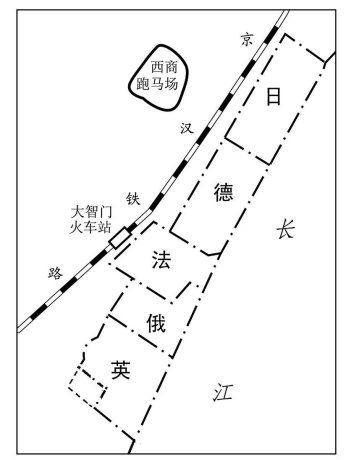

第三章至第六章构成了全书的"制度骨架"。它们回答了同一个问题：一块中国土地上的管治权，是怎样一步步被外侨团体接手的。
土地获取、地价、地税、地契。各地对"地税"的称呼并不相同：上海、广州、厦门称年租、租银、地租、租费或永远租钱；镇江、汉口、九江、苏州、杭州、重庆称税粮、税钱；天津则称租钱或钱粮。天津法租界的章程规定每亩每年向中国官府缴纳地税 1000 文。永租制下，租界土地的所有权与管治权被逐层剥离，这正是租界制度的经济地基。

立法主体与层级分明：上有中外约章，中有作为基本章程的《土地章程》，下有各类行政规章；章程又大体分为《土地章程》《市政章程》、综合章程、《居留民团法》四类，且多附有数款至数十款附则。上海英商租地的《土地章程》是租界《土地章程》的始作俑者，起初 23 条，公布于 1845 年。

领事裁判权是属人管辖权，租界开辟国的行政管理权则是属地管辖权。1864 年 5 月 1 日，第一个中外会审机构在英驻沪领事馆首次开庭，时称洋泾浜北首理事衙门，即后来的会审公堂。拘捕、审判、刑罚三节，把"谁抓人、谁审案、谁行刑"的混乱与争夺写得极细。

行政体制、主要事务、财政收支。英国人主导的公共租界设工部局，法国专管租界设公董局，日本租界设居留民团与居留民会，各有一套选举、议决与执行程序；巡捕、道路、卫生、执照、税收构成日常政务，年报与预算则记录下租界的财政实况。

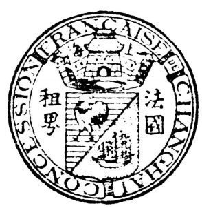


第七章按国别比较：谁的侨民自治更强，谁的领事更专断，谁的租界更像军事据点。
开辟最早、数量最多。侨民自治程度最高：租地人会议（后为纳税人会）决定公共事务，工部局对纳税人负责。英租界因夺得地利，往往成为最受外国侨民垂青的专管租界。
公董局受领事钳制。上海法租界 1857 年由爱棠设管理道路委员会，1862 年成立公董局，1865—1866 年间白来尼确立了被时人称为领事"独裁"的体制。上海法租界三次扩展后成为中国最大的专管租界。
上海美租界后来与英租界合并为公共租界；天津美租界 1880 年"交还"清政府，1902 年并入天津英租界。美国在华租界的"退场"，反衬出公共租界这一混合形态的兴起。
设居留民团与居留民会，行政与侨民团体高度合一，且与军方关系密切。到 20 世纪 20 年代，随着四个英租界被中国收回，日租界在数量上超过英国；作者认为天津日租界"对中国危害最烈"。
这五国也在中国开辟了专管租界，但数量少、历时短：德租界存在约 20 年，奥租界不足 15 年，俄租界 20 多年，比租界自 1902 年订约至 1931 年被"交还"只有 29 年，意租界维持到第二次世界大战后期，共 40 余年。它们的开辟既迟，又大多率先被中国政府收回——这一"历史的偶然性"里，其实藏着第一次世界大战带来的国际格局变动。

不论英、法、美、日，租界的共同底色是三件事：土地以永租方式取得，章程由外人主导订立，行政由外侨团体掌握。差别只在自治程度、与本国领事及军方的距离、以及华人是否被纳入治理体系。作者借此提醒：把租界一概而论，反而看不清它在各地的真实形态。

以开辟国而论，英国 7 个、日本 5 个、法国 4 个、美国与德国、俄国各 2 个，比利时、意大利、奥匈帝国各 1 个；以口岸而论，天津 9 个、汉口 5 个、上海 3 个、广州 2 个，厦门、镇江、九江、苏州、杭州、重庆各 1 个。
| 开辟国 | 数量 | 主要所在地 | 存续与特点 |
|---|---|---|---|
| 英国 | 7 | 上海、天津、汉口、九江、镇江、广州、厦门 | 开辟最早、数量最多，侨民自治程度最高 |
| 日本 | 5 | 天津、汉口、苏州、杭州、重庆 | 设居留民团、居留民会，与军方关系密切；无一通过外交谈判被收回 |
| 法国 | 4 | 上海、天津、汉口、广州 | 领事权力极强；上海法租界为中国最大专管租界 |
| 美国 | 2 | 上海、天津 | 上海美租界并入公共租界；天津美租界 1880 年交还、1902 年并入英租界 |
| 德国 | 2 | 汉口、天津 | 1917 年被中国收回，存约 20 年 |
| 俄国 | 2 | 汉口、天津 | 1920 年代管、1924 年正式收回 |
| 比利时 / 意大利 / 奥匈帝国 | 各 1 | 天津 | 比租界 1931 年被"交还"；奥租界不足 15 年，最短命；意租界维持到二战后期 |


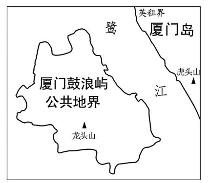
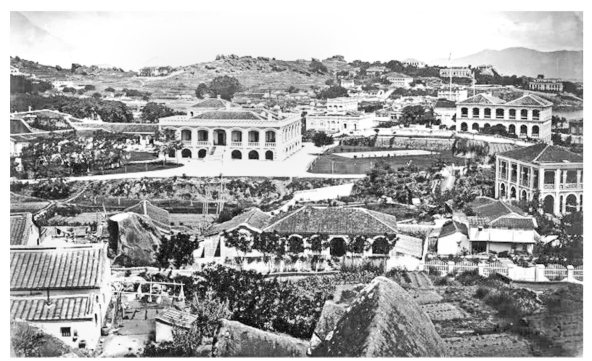


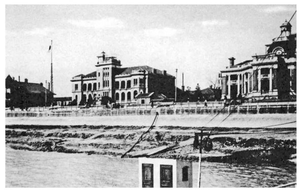

第十一章把视野从租界扩展出去。甲午战争之后，德、俄、英、法相继开辟胶州湾、旅大、威海卫、香港新界、广州湾五个租借地：多为海军基地，面积数百至数千平方公里，由总督或行政长官统治，不缴地价地税，租期最长 99 年——性质与租界并不相同，却在"外国人管治中国土地"这一点上一脉相承。

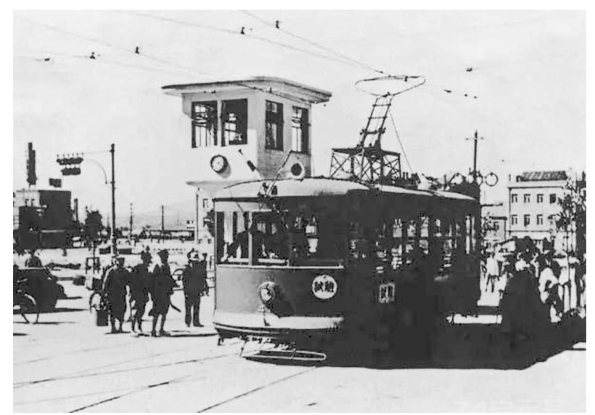
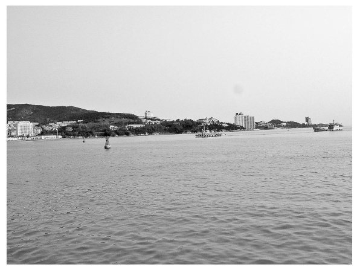
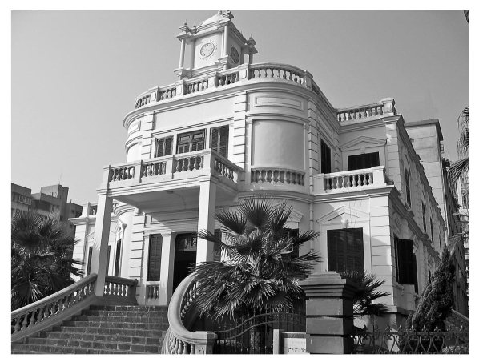
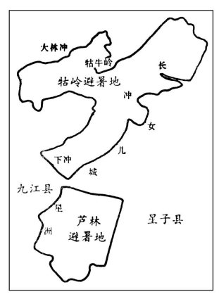
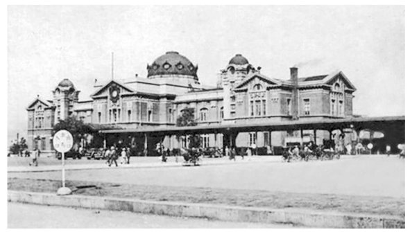

除租借地、避暑地、铁路附属地之外，书中还辨析了贸易圈、使馆区、通商场（如宁波江北岸通商区域、苏州与芜湖的公共通商场）等形态：它们或在通商口岸划出专供外商居住贸易的地段，或由多国共同管理，行政权、警察权、税收权的边界各不相同。把这些形态与租界并列考察，才能看清"外国人管治"这一现象在中国的完整谱系。
附录二"未形成租界一览表"则记录那些曾经议及、交涉而未成的租界——它们的失败同样是历史的一部分。
书前书后收有大量示意图与历史照片，此处精选十七幅；点击任意一幅可放大观看。
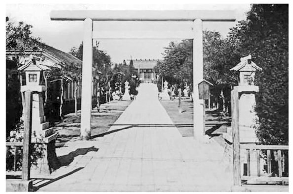


「此后，一批西方国家和日本在中国的十个通商口岸开辟了二十多个被称作"国中之国"的专管租界和公共租界。」
—— 第一章 开辟
「租界的开辟过程肇始于鸦片战争结束未久的 1843 年，基本结束于八国联军侵华战争后的 1902 年，前后长达六十年，大体上可分为四个阶段。」
—— 第一章 开辟
「由外国人控制的租界当局拥有属地的行政管理权，这是租界与华界最根本的区别。」
—— 第九章 "国中之国"的主要特征
「这样，德租界仅存在 20 年左右，奥租界存在的时间不足 15 年，成为最短命的租界。」
—— 第七章 各国租界的异同（第五节 其他各国租界）
「1943 年 7 月 30 日及 8 月 1 日，气息奄奄的法租界和公共租界终于在汪伪政府"收回"租界的喧嚣声中寿终正寝。」
—— 第十三章 租界的收回
「直到抗日战争胜利结束的 1945 年，中国才正式收回了天津、广州的英租界，使得收回英租界的进程断断续续地持续了二十年之久。」
—— 第十三章 租界的收回
「直到今日，昔日上海租界内的大批建筑仍保持着原来的风貌，成为各级文物保护单位；上海租界的所在地，仍是上海市的中心城区。」
—— 第八章 各地租界的兴衰（第一节 上海租界）
依据原书目录整理，页码为印刷页码。
| 书名 | 中国租界通史 |
|---|---|
| 著者 | 费成康 |
| 出版社 | 上海社会科学院出版社 |
| 版次 | 2024 年 4 月第 1 版 |
| ISBN | 978-7-5520-4320-4／D·718 |
| 开本与篇幅 | 710mm × 960mm 1/16，37 印张，550 千字 |
| 定价 | 168.00 元 |
| 附录 | 各地租界一览表、未形成租界一览表、大事年表 |
本页所用书影、示意图与历史照片均取自《中国租界通史》原书插图（示意图为"图 1—图 37"，历史照片为"照片 1—照片 41"），缩略处理后用于介绍与评述，版权归原作者与出版者所有。图注文字依据原书题注整理。
如果要给这部书找一个不可替代的位置，那就是：它第一次把二十五个专管租界与两个公共租界的制度细节与百年命运装进了同一部叙述之中，既讲清了"国中之国"如何长成，也讲清了它如何在中国人的抗争与世界大战的变局中终结。